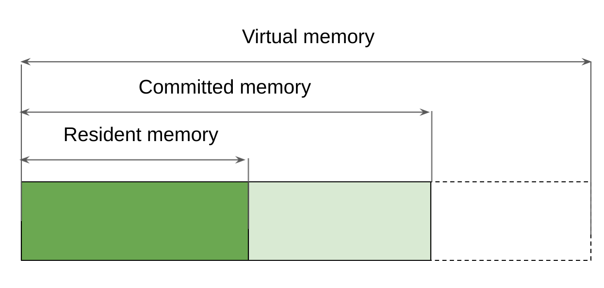

Java Data Type Representation
-
boolean - 8 bit (can be 1 bit but 8. better performance)
-
byte - 8 bit
-
short / char - 16 bit
-
int / float - 32 bit
-
long / double - 64 bit
-
reference (~ 32 bit but can be 64 bit. Depends on -XX:-UseCompressedOops)
Linux process memory
- Virtual - requested to allocate (invoice)
- Committed - request to use
- Resident - actually used
